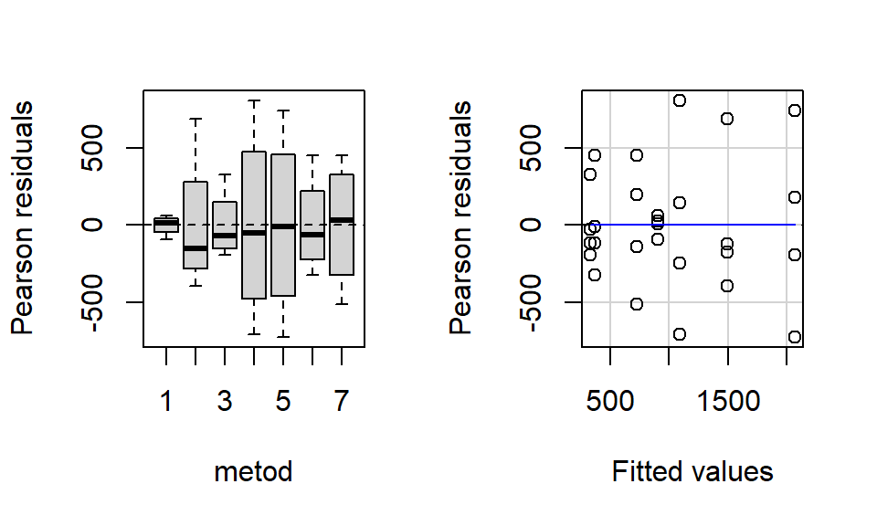

weeds <- read.csv2("DIN SÖKVÄG/weeds.csv") %>%
rename(
metod = 1,
skörd = 2
) |>
# Måste säkerställa att den kvalitativa variabeln är en faktor
mutate(
metod = as.factor(metod)
)13 Introduktion till variansanalys
I Kapitel 1 studerade vi förhållandet mellan en responsvariabel och en eller flera förklarande variabler. Om en förklarande variabel är kvalitativ transformerade vi variabeln till indikatorvariabler för att kunna matematiskt hantera variabeln på ett korrekt sätt.
Om en regressionsmodell endast skulle bestå utav kvalitativa variabler är regressionsmodellen ekvivalent med att jämföra medelvärden för varje värde av den kvalitativa variabeln. Att undersöka flera medelvärden med varandra kan också kallas för variansanalys och används ofta inom experimentella studier. I variansanalys kallas de förklarande variablerna för faktorer och dess kategorier för faktornivåer.
13.1 Envägs-ANOVA
En regressionsmodell med en kontinuerligt kvantitativ responsvariabel och en kvalitativ faktor (förklarande variabel) kallas för en envägs-ANOVA. Eftersom detta är i grunden en regressionsmodell kan vi formulera modellen som vi gjort i del II:
\[ \begin{aligned} Y_{ij} = \beta_0 + \beta_1 \cdot X_{1j} + \dots + \beta_{A-1}\cdot X_{(A-1)j} + E_{ij} \end{aligned} \] där
- \(j\) är observationsindex som går mellan 1:\(n_i\) där \(n_i\) är antalet observationer inom nivå \(i\) av faktorn,
- \(A\) är antalet nivåer av faktorn,
- respektive \(X_{ij}\) är indikatorkodade variabler som indikerar på nivå \(i\) av faktorn.
När alla indikatorvariabler är 0 identifieras den sista kategorin \(i = A\).
Notera
Till skillnad från den vanliga regressionsmodellen har \(Y\) nu fått två index, en för nivån av faktorn och en för observationerna inuti faktorn. Vi kommer se flera modeller inom variansanalys där vi ytterligare utökar index men det vi kan ha i åtanke är att det sista indexet alltid kommer vara observationsindex.
I praktiken kommer denna modell prediktera ett och samma värde för varje observation som har samma nivå av faktorn eftersom högst en indikatorvariabel kan vara 1 och ge en effekt av det tillhörande \(\beta_i\) på det anpassade värdet. Detta anpassade värde kommer beskriva respektive nivås medelvärde enligt:
\[ \begin{aligned} Y_{j = 1} &= \mu_1 = \beta_0 + \beta_1 \\ Y_{j = 2} &= \mu_2 = \beta_0 + \beta_2 \\ &\vdots \\ Y_{j = J-1} &= \mu_{J-1} = \beta_0 + \beta_{J-1} \\ Y_{j = J} &= \mu_J = \beta_0 \end{aligned} \]
Notera
Inom variansanalys kan denna sorts modell direkt modelleras utefter respektive nivås medelvärden istället för regressionsmodellen. Detta kallas för en cellmedelvärdesmodell som beräknar medelvärdet för varje cell av data, i envägs-ANOVA innebär detta för varje faktornivå.
\[ \begin{aligned} Y_{ij} = \mu_i + E_{ij} \end{aligned} \] där \(j\) är observationsindex och \(\mu_i\) är cellmedelvärdet för nivå \(i\) av faktorn.
I och med att en ANOVA-modell endast är ett specialfall av linjär regression gäller fortfarande att \(E_{ij} \sim N(0, \sigma^2)\) och att modellen bör utvärderas med hjälp av residualanalys från Kapitel 4 innan vi går vidare till inferensmetoder.
13.1.1 Faktoreffektkodning av kvalitativa variabler
Ett alternativt sätt att koda en kvalitativ variabel är att använda faktoreffektkodning. Istället för att parametern vid indikatorkodning mäter varje nivås effekt jämfört med en referenskategori, som i många fall väljs godtyckligt och påverkar varje parametervärde därefter, mäter parametern vid faktoreffektkodning effekten jämfört med det övergripande medelvärdet.
\[ \begin{aligned} Y_{ij} = \mu + \beta_1 \cdot X_{1j} + \dots + \beta_{A-1}\cdot X_{(A-1)j} + E_{ij} \end{aligned} \] där
- \(\mu\) är det oviktade medelvärdet av \(Y_{ij}\) enligt: \[ \begin{aligned} \mu &= \frac{\mu_1 + \mu_2 + \cdots + \mu_A}{A} \end{aligned} \]
- \(\beta_i\) är skillnaden/effekten av nivå \(i\) på det övergripande medelvärdet \(\mu\) enligt: \[ \begin{aligned} \beta_i = \mu_i - \mu \end{aligned} \]
- \(X_{ij}\) är en faktoreffektkodad variabel enligt: \[ \begin{aligned} X_{ij} = \begin{cases} 1 \quad &\text{om nivå i}\\ -1 &\text{om nivå A}\\ 0 &\text{annars} \end{cases} \end{aligned} \]
Med hjälp av denna kodning kan vi beräkna fram nivå \(A\)s effekt som den negativa summan av de övriga parametrarna trots att den inte anges direkt i modellen.
\[ \begin{aligned} \beta_A = -(\beta_1 + \beta_2 + \cdots + \beta_{A-1}) = \mu_A - \mu \end{aligned} \]
Notera
Viss litteratur börjar vid dessa modeller att byta beteckningar på parametrarna. Till exempel använder Kleinbaum m.fl. (2013) \(\alpha_i\) som beteckning för faktoreffekten av nivå \(i\) istället för att fortsätta med regressionsmodellens beteckningar. Detta underlag kommer bibehålla användandet av \(\beta\) men beskriva parametrar och tillhörande variabler så att det går att särskilja modeller från varandra.
13.2 Analys av metoder för ogräsbekämpning
Anta att experiment genomförst som undersöker hur olika ogräsbekämpningar i Etiopien påverkar skörden av durra (i kg per hektar). Mer specifikt är de olika bekämpningsmetoderna:
- 1 - Hacka, 1 ggr (hacka för hand en gång, fyra veckor efter att första grödan grott)
- 2 - Hacka, 2 ggr (hacka för hand två gånger, fyra och åtta veckor efter att första grödan grott)
- 3 - Samodling med kikärter (kikärter agerar som en täckningsgröda som motverkar tillväxten av ogräs)
- 4 - Samodling med kikärter, hacka 1 ggr (kombination av samodling och hacka för hand en gång, fyra veckor efter att första grödan grott)
- 5 - Ogräsfri kontroll (konstant bekämpning av ogräs med hacka)
- 6 - Ingen bekämpning
- 7 - Herbicid (ogräsmedlet 2,4-D appliceras sex veckor efter att första grödan grott)
Datamaterialet kan laddas ner här. Mer information om detta material finns att läsa via denna länk.
Vi kan läsa in datamaterialet till R och döpa om variablerna till enklare namn för att underlätta vår senare kodning. Vi måste också säkerställa att faktorn av intresse också kodas som en kategorisk variabel i R.
För att få en bild av materialet och responsvariabeln uppdelat på de olika faktornivåerna kan vi visualisera responsvariabelns fördelning med grupperade histogram, lådagram eller fioldiagram.
Visa kod
weeds %>%
ggplot() + aes(x = metod, y = skörd) + geom_boxplot(fill = "steelblue") +
theme_bw()Vi kan i visualiseringen se att den uppmätta skörden skiljer sig åt mellan de olika bekämpningsmetoderna.
Anta att vi använder faktoreffektkodning för att skapa följande modell som ska anpassas: \[ \begin{aligned} Y_{ij} = \mu + \beta_1 \cdot X_{1j} + \beta_{2}\cdot X_{2j} +\dots + \beta_{6}\cdot X_{6j} + E_{ij} \end{aligned} \tag{13.1}\] där \[ \begin{aligned} \mu &= \frac{\mu_1 + \mu_2 + \dots + \mu_6 + \mu_7}{7} \\ X_{1j} &= \begin{cases} 1 \quad &\text{om bekämpningsmetod 1}\\ -1 &\text{om bekämpningsmetod 7}\\ 0 &\text{annars} \end{cases} \\ X_{2j} &= \begin{cases} 1 \quad &\text{om bekämpningsmetod 2}\\ -1 &\text{om bekämpningsmetod 7}\\ 0 &\text{annars} \end{cases} \\ X_{3j} &= \begin{cases} 1 \quad &\text{om bekämpningsmetod 3}\\ -1 &\text{om bekämpningsmetod 7}\\ 0 &\text{annars} \end{cases} \\ X_{4j} &= \begin{cases} 1 \quad &\text{om bekämpningsmetod 4}\\ -1 &\text{om bekämpningsmetod 7}\\ 0 &\text{annars} \end{cases} \\ X_{5j} &= \begin{cases} 1 \quad &\text{om bekämpningsmetod 5}\\ -1 &\text{om bekämpningsmetod 7}\\ 0 &\text{annars} \end{cases} \\ X_{6j} &= \begin{cases} 1 \quad &\text{om bekämpningsmetod 6}\\ -1 &\text{om bekämpningsmetod 7}\\ 0 &\text{annars} \end{cases} \end{aligned} \] och \(E_{ij} \sim N(0, \sigma^2)\).
13.2.1 Kodning av faktorer
Eftersom standard i R är att koda kategoriska variabler med indikatorkodning (1/0) behöver vi först göra ytterligare ett steg innan vi anpassar modellen. R har flera sätt att ange hur en kategorisk variabel kodas, standard är att i bakgrunden köra contr.treatment(A) där A är antalet nivåer av faktorn.
contr.treatment(7) 2 3 4 5 6 7
1 0 0 0 0 0 0
2 1 0 0 0 0 0
3 0 1 0 0 0 0
4 0 0 1 0 0 0
5 0 0 0 1 0 0
6 0 0 0 0 1 0
7 0 0 0 0 0 1Den resulterande matrisen visar strukturen för hur R indikatorkodar en faktor, där den första nivån blivit referenskategorin (alla kolumner är 0) och A-1 indikatorvariabler skapas.
Om vi vill använda effektkodning behöver vi spara denna information i dataobjektet. Strukturen vi följer är att använda contrasts(variabel) <- kodning. Effektkodning anges med hjälp av contr.sum(A).
contr.sum(7) [,1] [,2] [,3] [,4] [,5] [,6]
1 1 0 0 0 0 0
2 0 1 0 0 0 0
3 0 0 1 0 0 0
4 0 0 0 1 0 0
5 0 0 0 0 1 0
6 0 0 0 0 0 1
7 -1 -1 -1 -1 -1 -1vars struktur kan sparas i dataobjektet genom:
contrasts(weeds$metod) <- contr.sum(7)Med effektkodning blir den sista nivån angiven som “den saknade” vilket nu stämmer överens med Ekvation 13.1. R kommer nu använda denna kodning när den linjära modellen anpassas.
13.2.2 Modellanpassning
Eftersom envägs-ANOVA endast är ett specialfall av en regression används lm() för att anpassa modellen.
Visa kod
model <- lm(skörd ~ metod, data = weeds)
model %>%
summary() %>%
coef() %>%
kable(digits = 3, caption = "Modellens koefficienter")| Estimate | Std. Error | t value | Pr(>|t|) | |
|---|---|---|---|---|
| (Intercept) | 998.119 | 83.006 | 12.025 | 0.000 |
| metod1 | -95.119 | 203.323 | -0.468 | 0.645 |
| metod2 | 500.159 | 203.323 | 2.460 | 0.023 |
| metod3 | -667.758 | 203.323 | -3.284 | 0.004 |
| metod4 | 90.214 | 203.323 | 0.444 | 0.662 |
| metod5 | 1070.881 | 203.323 | 5.267 | 0.000 |
| metod6 | -625.619 | 203.323 | -3.077 | 0.006 |
Vi kan presentera modellens koefficienter i en tabell men eftersom kodningen har ändrats gentemot tidigare modeller, behöver vi också justera tolkningen. Till exempel får vi att den genomsnittliga skörden oavsett metod är ca 998.119 kg/hektar och metod 1 får i genomsnitt 95.119 kg/hektar mindre skörd än genomsnittet. Metod 7s effekt kan beräknas genom den negativa summan av alla lutningskoefficienter till -272.758 kg/hektar.
Notera
Det finns ett alternativt sätt att anpassa just en ANOVA-modell, genom att använda funktionen aov(). aov() är egentligen bara en kombination av lm() och anova() där objektet fokuserar på att presentera ANOVA-tabellen istället för koefficienterna. Andra paket och funktioner än vad som tas upp i detta kapitel inom variansanalys kan ibland förutsätta att vi skapat ett aov-objekt istället för ett lm-objekt.
Modellens predikterade värden kommer representera medelvärdesskattningar för respektive nivå och dessa kan beräknas enkelt med hjälp av paketet emmeans. Följande medelvärden beräknas:
\[ \begin{aligned} \hat{\mu}_1 &= \hat{\mu} + \beta_1\\ \hat{\mu}_2 &= \hat{\mu} + \beta_2\\ &\quad\vdots\\ \hat{\mu}_6 &= \hat{\mu} + \beta_6\\ \hat{\mu}_7 &= \hat{\mu} - \sum_{j = 1}^{A-1}\beta_j \end{aligned} \]
Visa kod
require(emmeans)
# Anger vilka faktorer som medelvärden ska beräknas på
means <- emmeans(model, specs = ~metod)
means %>%
kable(digits = 3, caption = "Faktornivåernas medelvärden",
col.names = c("Metod", "Faktormedelvärde", "Medelfel", "Frihetsgrader", "Nedre KI gräns", "Övre KI gräns"))| Metod | Faktormedelvärde | Medelfel | Frihetsgrader | Nedre KI gräns | Övre KI gräns |
|---|---|---|---|---|---|
| 1 | 903.000 | 219.614 | 21 | 446.287 | 1359.713 |
| 2 | 1498.278 | 219.614 | 21 | 1041.565 | 1954.991 |
| 3 | 330.361 | 219.614 | 21 | -126.352 | 787.074 |
| 4 | 1088.333 | 219.614 | 21 | 631.620 | 1545.046 |
| 5 | 2069.000 | 219.614 | 21 | 1612.287 | 2525.713 |
| 6 | 372.500 | 219.614 | 21 | -84.213 | 829.213 |
| 7 | 725.361 | 219.614 | 21 | 268.648 | 1182.074 |
Konfidensintervallen som beräknas i detta resultat bör inte tolkas innan en residualanalys genomförts.
13.3 Residualanalys
Modellens lämplighet kan utvärderas på samma sätt som linjär regression från Kapitel 4. Då modellen endast består av kategoriska nivåer och de predikterade värdena är samma för varje observation inom respektive nivå, kommer dessa observationer få samma predikterade värde, \(\hat{\mu}_j\). Residualerna kommer därför att grupperas i de olika nivåerna.
Visa kod
residualPlots(model)
Utöver att modellerna grupperar residualerna baseras ofta experimentella studier på ett begränsat antal observationer jämfört med observationsstudier. Detta medför att slutsatser om modellens lämplighet är ibland rätt så svåra att bedöma på grund utav det låga stickprovsantalet.
Den största avvikelsen som kan läsas i diagrammet är antagandet om lika varians där punktsvärmen för metod 1 har betydligt mindre varians än de övriga grupperna. Detta ger en antydan till att antagandet om lika varians inte uppfylls.
13.4 Inferens
För envägs-ANOVA är vi intresserade av två aspekter; bidrar faktorn överhuvudtaget med någon effekt som kan hjälpa till att förklara responsvariabeln och i sådana fall vilken (eller vilka) nivå(er) bidrar till denna effekt.
13.4.1 F-test för faktoreffekt
Eftersom modellen endast består av en enstaka faktor kan ett F-test för modellen användas för att bedöma om faktorn har någon signifikant effekt. Vi undersöker: \[ \begin{aligned} H_0&: \beta_1 = \beta_2 = \dots = \beta_{A-1} = 0 \\ H_A&: \text{Minst en av } \beta_i \text{ i } H_0 \ne 0 \end{aligned} \] Oavsett vilken kodning som används för att transformera den kvalitativa variabeln kommer \(H_0\) beskriva fallet när det inte finns någon effekt oberoende på vilken faktornivå som observerats.
Notera
Eftersom vi kan förenkla modellen till att anpassa ett medelvärde för respektive nivå kan vi också formulera hypoteserna enligt: \[ \begin{aligned} H_0&: \mu_1 = \mu_2 = \dots = \mu_{A-1} = \mu_A \\ H_A&: \text{Minst två av } \mu_i \text{ i } H_0 \text{ skiljer sig åt} \end{aligned} \]
En effekt av faktorn skulle i denna formulering visas som en skillnad mellan (minst) två nivåers medelvärden. Vi skulle kunna anse denna form av hypoteser som en utveckling av jämförelser mellan två medelvärden som används i grundkurser av statistik.
Namnet variansanalys uppkommer då vi för dessa hypotesprövningar vill jämföra varianser av olika komponenter, likt vi gjort för regressionsmodeller i Kapitel 5. Mer specifikt undersöker vi relationen mellan den förklarande variationen och den oförklarande variationen vars formler vi nu kan förenkla när vi bara har kvalitativa förklarande variabler.
Vi kan definiera följande kvadratsummor för modellen:
\[ \begin{aligned} SSY &= \sum_{i=1}^A\sum_{j=1}^{n_i}{(Y_{ij} - \overline{Y})^2} \\ SSR &= \sum_{i=1}^A{n_i \cdot (\overline{Y}_i - \overline{Y})^2} \\ SSE &= \sum_{i=1}^A\sum_{j=1}^{n_i}{(Y_{ij} - \overline{Y}_i)^2} \end{aligned} \] där:
- SSY beskriver den totala variationen i hela datamaterialet, avståndet mellan varje observation, \(Y_{ij}\), och responsvariabelns medelvärde, \(\overline{Y}\).
- SSR beskriver den förklarade variationen, avståndet mellan varje nivås medelvärde, \(\overline{Y}_i\), och responsvariabelns medelvärde.
- SSE beskriver den oförklarade variationen, avståndet mellan varje observation, \(Y_{ij}\) och dess nivås medelvärde.
Vi kan se det som att den totala variationen beskriver Y bara genom sitt medelvärde, den förklarade variationen beskriver Y genom grupperade medelvärden, och den oförklarade variationen beskriver variationen inom respektive nivå.
Om \(H_0\) är sann betyder det att alla medelvärden är lika, eller att nivåernas effekt inte skiljer sig från det övergripande medelvärdet, \(\beta_i = 0 \text{ eller } \mu_i = \mu\). Detta skulle synas i kvadratsummorna som att SSR är nära 0 och att SSE i princip är lika stor som SSY. Om \(H_0\) inte är sann betyder det att minst två medelvärden skiljer sig åt eller att minst en av nivåernas effekt är skild från det övergripande medelvärdet. Detta skulle synas i kvadratsummorna som att SSR är stort, närmare SSY, och att SSE är litet.
Testvariabeln för denna hypotesprövning blir då en jämförelse mellan SSR och SSE enligt: \[ \begin{aligned} F_{test} = \frac{SSR / df_R}{SSE / df_E} = \frac{MSR}{MSE} \end{aligned} \] Testvariabeln anses följa F-fördelningen med \(df_R\) och \(df_E\) frihetsgrader. Tänk på att dessa tester alltid är enkelsidiga vilket innebär att vi letar upp kritiska värden till höger av fördelningen.
13.4.1.1 Interaktiv visualisering
I följande interaktiva visualisering simuleras ett urval av en kontinuerlig responsvariabel uppdelat på fyra olika nivåer. I menyn till vänster kan vi styra vilket medelvärde i populationen som respektive nivå har och visualiseringen till höger visar fördelningen av simulerade utfallet med ett histogram. Visualiseringarna innehåller också två linjer, en heldragen röd för det övergripande medelvärdet och streckade svarta linjer för respektive nivås medelvärde, \(\hat{\mu}_i = \overline{Y}_i\). Titta specifikt på vad som händer med kvoten mellan de två medelkvadratsummorna när det simulerade datamaterialet har lika medelvärden och när de har olika medelvärden.
#| '!! shinylive warning !!': |
#| shinylive does not work in self-contained HTML documents.
#| Please set `embed-resources: false` in your metadata.
#| standalone: true
#| viewerHeight: 1000
require(shiny)
require(bslib)
require(ggplot2)
require(tidyverse)
require(stringr)
# Define UI for app that draws a histogram ----
ui <- page_sidebar(
sidebar = sidebar(open = "open",
sliderInput("group_1", "Medelvärde för Grupp 1", min = -10, max = 10, value = 0, step = 0.1),
sliderInput("group_2", "Medelvärde för Grupp 2", min = -10, max = 10, value = 0, step = 0.1),
sliderInput("group_3", "Medelvärde för Grupp 3", min = -10, max = 10, value = 0, step = 0.1),
sliderInput("group_4", "Medelvärde för Grupp 4", min = -10, max = 10, value = 0, step = 0.1),
numericInput("sample_size", "Stickprovsstorlek", value = 30, min = 1, step = 1),
actionButton("new_sample", "Klicka här för ett nytt urval."),
uiOutput("variances"),
),
plotOutput("plot", height = "600px")
)
server <- function(input, output, session) {
data_input <- reactive({
means <- c(input$group_1, input$group_2, input$group_3, input$group_4)
seed <- today() + input$new_sample
set.seed(seed = seed)
samples <- sapply(means, FUN = function(x) {
rnorm(n = input$sample_size, mean = x, sd = 1)
}) %>%
as.data.frame()
data_samples <- pivot_longer(samples, cols = everything()) %>%
mutate(
name = str_replace(name, "V", "Grupp ")
)
})
output$plot <- renderPlot({
data_samples <- data_input()
sample_means <- aggregate(value ~ name, data_samples, mean)
ggplot(data = data_samples) + aes(x = value) +
geom_histogram(binwidth = 0.25, color = "black", fill = "steelblue") +
geom_vline(data = sample_means, aes(xintercept = value), linetype = 2, linewidth = 1.2) +
geom_vline(aes(xintercept = mean(value)), color = "#d9230f", linewidth = 1) +
scale_x_continuous(breaks = seq(-20, 20, by = 1)) +
facet_grid(rows = vars(name)) + theme_bw() +
theme(strip.text.y = element_text(angle = 0, color = "white", size = 14),
strip.background.y = element_rect(fill = "black"),
axis.title.y = element_blank()) +
labs(x = "Y")
})
output$variances <- renderUI({
data_samples <- data_input()
sample_means <- aggregate(value ~ name, data_samples, mean)
sample_sizes <- aggregate(value ~ name, data_samples, length)
SSY <- sum((data_samples$value - mean(data_samples$value))^2)
SSR <- sum(sample_sizes$value * (sample_means$value - mean(data_samples$value))^2)
MSR <- SSR/(nrow(sample_means) - 1)
SSE <- SSY-SSR
MSE <- SSE/(nrow(data_samples) - nrow(sample_means))
pvalue <- pf(
round(MSR / MSE, 3),
df1 = (nrow(sample_means) - 1),
df2 = (nrow(data_samples) - nrow(sample_means)),
lower.tail = FALSE
)
withMathJax(
paste("$$SSY = ", round(SSY, 3), "\\\\",
"SSR = ", round(SSR, 3), "\\\\",
"SSE = ", round(SSE, 3), "\\\\",
"F_{test} = ", round(MSR / MSE, 3), "\\\\",
"\\text{p-värde} = ", pvalue %>% round(3), "$$")
)
})
}
# Create Shiny app ----
shinyApp(ui = ui, server = server)
13.4.2 Multipla jämförelser med familjekonfidens
Om \(H_0\) förkastas anser vi att faktorn i sin helhet har en signifikant påverkan på responsvariabeln men vi har ingen uppfattning om exakt vilken eller vilka nivåer som ger denna effekt och ifall nivåernas effekter skiljer sig från varandra. I många av dessa fall betyder detta att jämföra flera par av medelvärden med varandra men där vi vill kunna dra slutsatser om alla jämförelser på en och samma gång. Vi introducerade konceptet av simultan inferens i Kapitel 6 och samma lösning kan vi nu tillämpa här.
Antalet jämförelser som ska undersökas ökar drastiskt med antalet nivåer av faktorn enligt \(\binom{A}{2}\) och för att kunna genomföra en sammanfattande tolkning utan risk för ett inflaterat typ I fel använder vi en familjekonfidens.
Vi kan definiera en parvis jämförelse som \[ \begin{aligned} \hat{D}_{i i'} = \overline{Y}_{i\cdot} - \overline{Y}_{i'\cdot} \end{aligned} \] där \(i \ne i'\).
Variansen för denna jämförelse beräknas utifrån den anpassade modellen där vi använder MSE som ett mått på modellens osäkerhet. \[ \begin{aligned} Var(\hat{D}_{i i'}) = MSE \cdot \left(\frac{1}{n_i} + \frac{1}{n_{i'}}\right) \end{aligned} \]
Det finns olika metoder att skapa familjekonfidensen som alla är lämpliga för olika ändamål. Vi väljer metod utifrån vilken som ger det smalaste intervallbredden givet samma valda familjekonfidensgrad.
13.4.2.1 Tukey
Tukey-Kramer-metoden används för att jämföra alla parvisa skillnader mellan gruppmedelvärden efter att ett F-test för hela faktorn har visat att det finns en signfikant effekt. Tabellvärdet kan beräknas som:
\[ \begin{aligned} \hat{D}_{i i'} \pm \frac{q_{A; n-A; 1 - \alpha}}{\sqrt{2}} \cdot \sqrt{Var(\hat{D}_{ii'})} \end{aligned} \] där \(q_{A; n-A; 1 - \alpha}\) är ett tabellvärde från den studentiserade variationsviddsfördelningen (eng. Studentized range distribution) med \(A\) respektive \(n-A\) frihetsgrader.
Tips
För att förstå den studentiserade variationsvidden, anta att vi har ett urval av storlek (\(n\)) från var och en av (\(A\)) populationer med samma normalfördelning (\(N(\mu, \sigma^2)\)). Om vi antar att (\(\overline{Y}{\max}\)) är det största av dessa urvalsmedelvärden och (\(\overline{Y}{\min}\)) är det minsta, och (\(s^2\)) är den poolade urvalsvariansen från dessa urval, så har följande statistika en studentiserad variationsviddsfördelning:
\[ q = \frac{\overline{Y}{\max} - \overline{Y}{\min}}{s / \sqrt{n}} \]
Om 0 täcks av intervallet innebär det att differensen inte är signifikant skild från varandra. Tukey-metoden genererar generellt smalare intervall än övriga metoder när alla par av jämförelser ska beräknas och anses därför vara “starkare.”
Beräkningen av dessa parvisa jämförelser är ofta tidskrävande men med hjälp av paketet emmeans kan vi använda det skapade objektet med faktornivåmedelvärden (hädanefter kallad faktormedelvärden) för att sedan undersöka alla par av medelvärden.
Visa kod
tukey <-
pairs(means, adjust = "tukey")
tukey %>%
as_tibble() %>%
arrange(abs(estimate) %>% desc()) %>%
kable(digits = 3, caption = "Parvisa jämförelser av faktormedelvärden med Tukey familjekonfidens")| contrast | estimate | SE | df | t.ratio | p.value |
|---|---|---|---|---|---|
| metod3 - metod5 | -1738.639 | 310.581 | 21 | -5.598 | 0.000 |
| metod5 - metod6 | 1696.500 | 310.581 | 21 | 5.462 | 0.000 |
| metod5 - metod7 | 1343.639 | 310.581 | 21 | 4.326 | 0.005 |
| metod2 - metod3 | 1167.917 | 310.581 | 21 | 3.760 | 0.017 |
| metod1 - metod5 | -1166.000 | 310.581 | 21 | -3.754 | 0.017 |
| metod2 - metod6 | 1125.778 | 310.581 | 21 | 3.625 | 0.023 |
| metod4 - metod5 | -980.667 | 310.581 | 21 | -3.158 | 0.061 |
| metod2 - metod7 | 772.917 | 310.581 | 21 | 2.489 | 0.213 |
| metod3 - metod4 | -757.972 | 310.581 | 21 | -2.440 | 0.231 |
| metod4 - metod6 | 715.833 | 310.581 | 21 | 2.305 | 0.287 |
| metod1 - metod2 | -595.278 | 310.581 | 21 | -1.917 | 0.492 |
| metod1 - metod3 | 572.639 | 310.581 | 21 | 1.844 | 0.536 |
| metod2 - metod5 | -570.722 | 310.581 | 21 | -1.838 | 0.539 |
| metod1 - metod6 | 530.500 | 310.581 | 21 | 1.708 | 0.618 |
| metod2 - metod4 | 409.944 | 310.581 | 21 | 1.320 | 0.835 |
| metod3 - metod7 | -395.000 | 310.581 | 21 | -1.272 | 0.857 |
| metod4 - metod7 | 362.972 | 310.581 | 21 | 1.169 | 0.898 |
| metod6 - metod7 | -352.861 | 310.581 | 21 | -1.136 | 0.909 |
| metod1 - metod4 | -185.333 | 310.581 | 21 | -0.597 | 0.996 |
| metod1 - metod7 | 177.639 | 310.581 | 21 | 0.572 | 0.997 |
| metod3 - metod6 | -42.139 | 310.581 | 21 | -0.136 | 1.000 |
Vi kan välja att sortera de parvisa jämförelserna i storleksordning eftersom vi så småningom når en gräns där skillnaden inte längre anses vara signifikant. Tolkningen av resultatet blir då enklare eftersom vi kan lista differenserna från “metod 3 mot metod 5” till “metod 2 mot metod 6” som signifikanta på fem procents signifikans.
13.4.2.2 Bonferroni
Undersöker \(g\) jämförelser. Använder sig av t-fördelningen men signifikansnivån beräknas \(\alpha / g\). Anta att vi bara vill jämföra metoderna som innehåller hackning med varandra.
Visa kod
selectedMeans <- means[c(1, 2, 4),]
bonferroni <-
pairs(selectedMeans, adjust = "bonferroni")
bonferroni %>%
as_tibble() %>%
arrange(abs(estimate) |> desc()) %>%
kable(digits = 3, caption = "Parvisa jämförelser av utvalda faktormedelvärden med Bonferroni familjekonfidens")| contrast | estimate | SE | df | t.ratio | p.value |
|---|---|---|---|---|---|
| metod1 - metod2 | -595.278 | 310.581 | 21 | -1.917 | 0.207 |
| metod2 - metod4 | 409.944 | 310.581 | 21 | 1.320 | 0.603 |
| metod1 - metod4 | -185.333 | 310.581 | 21 | -0.597 | 1.000 |
13.4.2.3 Scheffé
Vi behöver inte begränsa våra jämförelser till att endast titta på par av nivåer. \(\hat{D}_{ii'}\) är ett specialfall av en kontrast där endast två nivåer jämförs men vi kan formulera en generell kontrast som: \[ \begin{aligned} L = \sum_{j = 1}^A{c_j \cdot \mu_j} \end{aligned} \] där \(\sum{c_j} = 0\).
I specialfallet med en parvis jämförelse mellan exempelvis metod 1 och 2 är kontrasten: \[ \begin{aligned} L &= 1 \cdot \mu_1 + (-1) \cdot \mu_2 + 0 \cdot \mu_3 + 0 \cdot \mu_4 + 0 \cdot \mu_5 + 0 \cdot \mu_6 + 0 \cdot \mu_7 \\ &= \mu_1 - \mu_2 \end{aligned} \] där \(c_1 = 1\), \(c_2 = -1\) och resterande \(c_j = 0\). Detta uppfyller begränsningen på konstanterna i kontrasten.
Vi kan skapa egna kontraster av många olika former, med begränsningen att konstanterna ska summera till 0, genom contrast(). Till exempel skulle det kanske vara intressant att undersöka följande jämförelse mellan de två nivåerna som innehöll hackning och nivån beskrivande endast samodling. \[
\begin{aligned}
L = \frac{\mu_1 + \mu_2}{2} - \mu_3
\end{aligned}
\] där \(c_1 = c_2 = \frac{1}{2} = 0.5\) och \(c_3 = -1\).
Från de skattade medelvärdena kan kontrasten skattas till: \[
\begin{aligned}
\hat{L} &= 0.5 \cdot 903 + 0.5 \cdot 1498.278 - 330.361\\
&= 870.278
\end{aligned}
\] där värden tas från tabellen som emmeans() producerat. Medelfelet för denna jämförelse beräknas enligt: \[
\begin{aligned}
SE_{\hat{L}} &= \sqrt{1.929217\times 10^{5} \cdot \left( \frac{0.5^2}{4} + \frac{0.5^2}{4} + \frac{(-1)^2}{4}\right)} \\
&= 268.971
\end{aligned}
\] där \(MSE = 1.929217\times 10^{5}\) är tagen från ANOVA-tabellen för den anpassade modellen.
Visa kod
# Scheffé kontraster
contrast(
means,
# Anger konstanterna för respektive nivå i kontrasten
list(
L1 = c(0.5, 0.5, -1, 0, 0, 0, 0)
),
# Anger vilken familjekonfidensmetod som ska genomföras
adjust = "scheffe"
) %>%
kable(digits = 3, caption = "Beräknad kontrast med tillhörande p-värde.")| contrast | estimate | SE | df | t.ratio | p.value |
|---|---|---|---|---|---|
| L1 | 870.278 | 268.971 | 21 | 3.236 | 0.004 |
Med hjälp av skattningen och medelfelet kan vi också beräkna ett konfidensintervall enligt formler från Kleinbaum m.fl. (2013).
Referenser
Kleinbaum, D. G., L. L. Kupper, A. Nizam, och E. S. Rosenberg. 2013. Applied Regression Analysis and Other Multivariable Methods. Cengage Learning. https://books.google.se/books?id=v590AgAAQBAJ.